<!DOCTYPE html>
<html lang="en">
<head>
	<meta charset="utf-8">
	<meta name="description" content="">
	<meta name="author" content="">
	<meta name="viewport" content="width=device-width, initial-scale=1.0, user-scalable=no">
	<title>Potree Viewer from WNMP</title>

	<link rel="stylesheet" type="text/css" href="./libs/potree/potree.css">
	<link rel="stylesheet" type="text/css" href="./libs/jquery-ui/jquery-ui.min.css">
	<link rel="stylesheet" type="text/css" href="./libs/openlayers3/ol.css">
	<link rel="stylesheet" type="text/css" href="./libs/spectrum/spectrum.css">
	<link rel="stylesheet" type="text/css" href="./libs/jstree/themes/mixed/style.css">
</head>

<style>

img {
  max-width: 100%;
  max-height:100%;
}

.columns {
  width: 400px;
  column-count: 2;
}

.annotation {
    opacity: 1;
}

.annotation-action-icon {
	filter: invert(1) ;
}

.annotation-description {
	opacity: 1;
	background-color: rgba(0, 0, 0, 1);
}

  </style>


<body>
	<script src="./libs/jquery/jquery-3.1.1.min.js"></script>
	<script src="./libs/spectrum/spectrum.js"></script>
	<script src="./libs/jquery-ui/jquery-ui.min.js"></script>
	<script src="./libs/other/BinaryHeap.js"></script>
	<script src="./libs/tween/tween.min.js"></script>
	<script src="./libs/d3/d3.js"></script>
	<script src="./libs/proj4/proj4.js"></script>
	<script src="./libs/openlayers3/ol.js"></script>
	<script src="./libs/i18next/i18next.js"></script>
	<script src="./libs/jstree/jstree.js"></script>
	<script src="./libs/potree/potree.js"></script>
	<script src="./libs/plasio/js/laslaz.js"></script>
	<script src="./libs/three.js/build/three.module.js"></script>
	<script src="./libs/three.js/build/three.min.js"></script>
	<script src="/libs/three.js/loaders/PLYLoader.js"></script>
	<script src="/libs/three.js/loaders/OBJLoader.js"></script>	
	
	<!-- INCLUDE ADDITIONAL DEPENDENCIES HERE -->
	<!-- INCLUDE SETTINGS HERE -->
	
	<div class="potree_container" style="position: absolute; width: 100%; height: 100%; left: 0px; top: 0px; ">
		<div id="potree_render_area" style="background-image: url('../build/potree/resources/images/background.jpg');"></div>
		<div id="potree_sidebar_container"> </div>
	</div>
	
	<script>
	
		window.viewer = new Potree.Viewer(document.getElementById("potree_render_area"));
		
		viewer.setEDLEnabled(true);
		viewer.setFOV(60);
		viewer.setPointBudget(2_000_000);
		<!-- INCLUDE SETTINGS HERE -->
		viewer.loadSettingsFromURL();
		
		viewer.setDescription("");
		
		viewer.loadGUI(() => {
			viewer.setLanguage('en');
			$("#menu_appearance").next().show();
			$("#menu_tools").next().show();
			$("#menu_clipping").next().show();
			viewer.toggleSidebar();
		});
		
		
		let sceneAll = new Potree.Scene();
		let sceneInside = new Potree.Scene();
		
		viewer.setScene(sceneAll);
		

		
		// 1. point cloud in scene 1
		Potree.loadPointCloud("./pointclouds/all/calosc/metadata.json", "Wnętrze", e => {
			sceneAll.addPointCloud(e.pointcloud);
			sceneAll.view.position.set(10.091, 49.121, 37.764);
			sceneAll.view.lookAt(91.362, 56.854, 20.736);
			
			let material = e.pointcloud.material;
			material.size = 1;
			material.pointSizeType = Potree.PointSizeType.ADAPTIVE;
			material.shape = Potree.PointShape.SQUARE;
			material.activeAttributeName = "rgba";
			
			{
				{
					let elTitle = $(`
						<span>
							Wnętrze
							
						</span>
					`);
					elTitle.find("img[name=action_set_scene]").click( (event) => {
						event.stopPropagation();
						viewer.setScene(sceneInside); 
					});
					elTitle.toString = () => "Wnętrze";

					let aAbout1 = new Potree.Annotation({
						position: [78.714, 35.556, 1.094],
						title: elTitle,
						cameraPosition: [68.160, 20.527, 3.197],
						cameraTarget: [92.430, 47.341, -2.470],
					});

					sceneAll.annotations.add(aAbout1);
				}
				
				
				//mozna dolaczac kolejne annotation
				{
					let aAbout2 = new Potree.Annotation({
						position: [80.333, 33.606, 8.774],
						title: 'Punkt 11',
						cameraPosition: [78.975, 26.060, 9.676],
						cameraTarget: [82.654, 32.235, 8.226],
						description: 
						`11. Czujnik temperatury i wilgotności zewnętrznej
						<ul class="columns">
						<li><a href="https://www.mapa.network/goto/R3QcFk_Vk?orgId=11" target="_blank">Czujnik temperatury i wilgotności</a></li>
						</ul>
						<p style="text-align:center">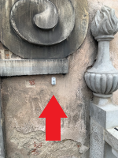</p>`		
					});
					
					sceneAll.annotations.add(aAbout2);
				}
				
				{
					let aAbout2 = new Potree.Annotation({
						position: [70.966, 46.803, 2.213],
						title: 'Punkt 12',
						cameraPosition: [59.903, 50.591, 2.059],
						cameraTarget: [74.913, 41.998, 0.408],
						description: 
						`12. Czujnik temperatury i wilgotności zewnętrznej
						<ul class="columns">
						<li><a href="https://www.mapa.network/goto/h2IsFzl4k?orgId=11" target="_blank">Czujnik temperatury i wilgotności</a></li>
						</ul>
						<p style="text-align:center">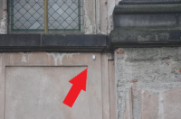</p>`		
					});
					
					sceneAll.annotations.add(aAbout2);
				}

				{
					let aAbout2 = new Potree.Annotation({
						position: [105.635, 73.251, 2.131],
						title: 'Punkt 13',
						cameraPosition: [99.308, 85.758, 1.775],
						cameraTarget: [102.948, 67.550, -1.306],
						description: 
						`13. Czujnik temperatury i wilgotności zewnętrznej
						<ul class="columns">
						<li><a href="https://www.mapa.network/goto/NskkczlVk?orgId=11" target="_blank">Czujnik temperatury i wilgotności</a></li>
						</ul>
						<p style="text-align:center">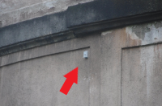</p>`		
					});
					
					sceneAll.annotations.add(aAbout2);
				}
				
			}
		
		});
		
		viewer.setScene(sceneAll);
		
		// 2. point cloud in scene 1
		Potree.loadPointCloud("./pointclouds/all/piwnica/metadata.json", "Piwnica", e => {
			sceneAll.addPointCloud(e.pointcloud);
			viewer.fitToScreen();
			
			let material = e.pointcloud.material;
			material.size = 1;
			material.pointSizeType = Potree.PointSizeType.ADAPTIVE;
			material.shape = Potree.PointShape.SQUARE;
			material.activeAttributeName = "rgba";
			
		
		});

		viewer.setScene(sceneAll);
		
		// 3. point cloud in scene 1
		Potree.loadPointCloud("./pointclouds/all/wiezba/metadata.json", "Więźba", e => {
			sceneAll.addPointCloud(e.pointcloud);
			viewer.fitToScreen();
			
			let material = e.pointcloud.material;
			material.size = 1;
			material.pointSizeType = Potree.PointSizeType.ADAPTIVE;
			material.shape = Potree.PointShape.SQUARE;
			material.activeAttributeName = "rgba";
			
		
		});	
		
		// Wnetrze in scene 2
		Potree.loadPointCloud("./pointclouds/inside/metadata.json", "Wnętrze", function(e){
			sceneInside.addPointCloud(e.pointcloud);
			sceneInside.view.position.set(80.347, 41.517, 1.975);
			sceneInside.view.lookAt(94.182, 49.284, 4.318);
			e.pointcloud.material.pointSizeType = Potree.PointSizeType.ADAPTIVE;
			
		
			
			sceneInside.addAnnotation([79.653, 36.225, 2.011], {
				"opacity": "1",
				"title": "Zewnętrze",
				"actions": [{
					"icon": Potree.resourcePath + "/icons/goto.svg",
					"onclick": function(){
						viewer.setScene(sceneAll);
					}
				}]
			});
			
			{
				{
			
					let aAbout1 = new Potree.Annotation({
						position: [113.387, 54.499, 3.517],
						title: 'Punkt 1',
						cameraPosition: [105.795, 57.907, 1.561],
						cameraTarget: [108.104, 56.585, 2.099],
						description: `1. Czujnik zarysowania + czujnik temperatury i wilgotności wewnętrznej
						<ul class="columns">
						<li><a href="https://www.mapa.network/d/5LJp1xHVki/displacement?orgId=11&from=1665935912256&to=1681660712256&viewPanel=14" target="_blank">Czujnik zarysowania</a></li></p>
						<li><a href="https://www.mapa.network/d/HWDGybHVz/temperatury-i-wilgotnosci?orgId=11&from=1665935946589&to=1681660746589&viewPanel=6" target="_blank">Czujnik temperatury i wilgotności</a></li>
						</ul>
						<p style="text-align:center">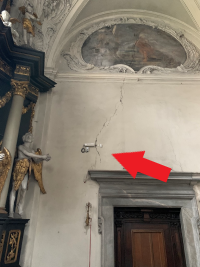</p>`
						
					});

					sceneInside.annotations.add(aAbout1);
				}
				
				{
			
					let aAbout2 = new Potree.Annotation({
						position: [104.178, 72.127, 7.399],
						title: 'Punkt 2',
						cameraPosition: [105.467, 61.310, 3.199],
						cameraTarget: [105.460, 70.393, 4.575],
						description: `2. Czujnik zarysowania + czujnik temperatury i wilgotności wewnętrznej
						<ul class="columns">
						<li><a href="https://www.mapa.network/goto/KPsWDNPVz?orgId=11" target="_blank">Czujnik zarysowania</a></li></p>
						<li><a href="https://www.mapa.network/goto/ecrGDNPVk?orgId=11" target="_blank">Czujnik temperatury i wilgotności</a></li>
						</ul>
						<p style="text-align:center">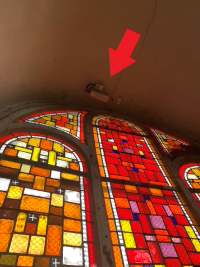</p>`
					});
					aAbout2.domElement.on("mouseenter"); //TEN ELEMENT POZWALA NA WYŁĄCZENIE/WŁĄCZENIE OPISÓW NA STAŁE PO NAJECHANIU (nalezy zmienic on na off)
					aAbout2.domElement.on("mouseleave");
					aAbout2.addEventListener("click", () => {
						aAbout2.setHighlighted(!aAbout2.isHighlighted);
					});
					sceneInside.annotations.add(aAbout2);
				}

				//mozna dolaczac kolejne annotation

				
				{
					let aAbout2 = new Potree.Annotation({
						position: [88.489, 64.014, 2.785],
						title: 'Punkt 3',
						cameraPosition: [92.932, 60.972, 3.539],
						cameraTarget: [86.048, 66.082, 2.414],
						description: 
						`3. Czujnik zarysowania
						<ul class="columns">
						<li><a href="https://www.mapa.network/goto/k6Ezr5wVk?orgId=11" target="_blank">Czujnik zarysowania</a></li></p>
						</ul>
						<p style="text-align:center">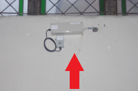</p>`		
					});
					aAbout2.domElement.on("mouseenter"); 
					aAbout2.domElement.on("mouseleave"); //TEN ELEMENT POZWALA NA WYŁĄCZENIE/WŁĄCZENIE OPISÓW NA STAŁE PO NAJECHANIU (nalezy zmienic on na off)
					aAbout2.addEventListener("click", () => {
						aAbout2.setHighlighted(!aAbout2.isHighlighted);
					});
					sceneInside.annotations.add(aAbout2);
				}
				
				{
					let aAbout2 = new Potree.Annotation({
						position: [97.887, 66.457, 12.581],
						title: 'Punkt 4',
						cameraPosition: [94.340, 68.928, 11.228],
						cameraTarget: [98.040, 66.501, 11.366],
						description: 
						`4. Czujnik zarysowania + czujnik temperatury i wilgotności wewnętrznej
						<ul class="columns">
						<li><a href="https://www.mapa.network/goto/_fT1r5Q4z?orgId=11" target="_blank">Czujnik zarysowania</a></li></p>
						<li><a href="https://www.mapa.network/goto/DmZxrcw4z?orgId=11" target="_blank">Czujnik temperatury i wilgotności</a></li>
						</ul>
						<p style="text-align:center">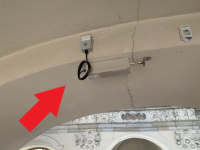</p>`		
					});
					
					sceneInside.annotations.add(aAbout2);
				}
				
				{
					let aAbout2 = new Potree.Annotation({
						position: [112.575, 53.688, 12.62],
						title: 'Punkt 5',
						cameraPosition: [100.206, 63.830, 10.710],
						cameraTarget: [109.241, 56.254, 10.341],
						description: 
						`5. Czujnik zarysowania
						<ul class="columns">
						<li><a href="https://www.mapa.network/goto/MyC1qcwVz?orgId=11" target="_blank">Czujnik zarysowania</a></li></p>
						</ul>
						<p style="text-align:center">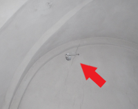</p>`		
					});
					
					sceneInside.annotations.add(aAbout2);
				}
				
				{
					let aAbout2 = new Potree.Annotation({
						position: [100.580, 41.579, 12.620],
						title: 'Punkt 6',
						cameraPosition: [90.050, 50.972, 10.195],
						cameraTarget: [98.095, 43.034, 9.370],
						description: 
						`6. Czujnik zarysowania + czujnik temperatury i wilgotności wewnętrznej
						<ul class="columns">
						<li><a href="https://www.mapa.network/goto/Rin7DzlVz?orgId=11" target="_blank">Czujnik zarysowania</a></li></p>
						<li><a href="https://www.mapa.network/goto/RT37vk_4k?orgId=11" target="_blank">Czujnik temperatury i wilgotności</a></li>
						</ul>
						<p style="text-align:center">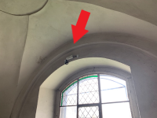</p>`		
					});
					
					sceneInside.annotations.add(aAbout2);
				}
				
				{
					let aAbout2 = new Potree.Annotation({
						position: [76.583, 50.166, 12.413],
						title: 'Punkt 7',
						cameraPosition: [87.993, 45.571, 10.685],
						cameraTarget: [79.394, 49.720, 10.496],
						description: 
						`7. Czujnik zarysowania
						<ul class="columns">
						<li><a href="https://www.mapa.network/goto/PlQqDz_4z?orgId=11" target="_blank">Czujnik zarysowania</a></li></p>
						</ul>
						<p style="text-align:center">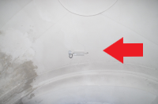</p>`		
					});
					
					sceneInside.annotations.add(aAbout2);
				}
				
				{
					let aAbout2 = new Potree.Annotation({
						position: [99.876, 66.890, 21.066],
						title: 'Punkt 8',
						cameraPosition: [101.332, 60.312, 21.650],
						cameraTarget: [101.352, 61.594, 21.542],
						description: 
						`8. Czujnik zarysowania + czujnik temperatury i wilgotności wewnętrznej
						<ul class="columns">
						<li><a href="https://www.mapa.network/goto/iJdadz_Vk?orgId=11" target="_blank">Czujnik zarysowania</a></li></p>
						<li><a href="https://www.mapa.network/goto/4CFBOzlVz?orgId=11" target="_blank">Czujnik temperatury i wilgotności</a></li>
						</ul>
						<p style="text-align:center">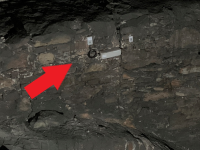</p>`		
					});
					
					sceneInside.annotations.add(aAbout2);
				}
				
				{
					let aAbout2 = new Potree.Annotation({
						position: [107.904, 59.403, 20.888],
						title: 'Punkt 9',
						cameraPosition: [101.057, 60.186, 21.973],
						cameraTarget: [107.484, 59.388, 21.292],
						description: 
						`9. Czujnik zarysowania + czujnik temperatury i wilgotności wewnętrznej
						<ul class="columns">
						<li><a href="https://www.mapa.network/goto/iv8adzlVk?orgId=11" target="_blank">Czujnik zarysowania</a></li></p>
						<li><a href="https://www.mapa.network/goto/u7sfOklVz?orgId=11" target="_blank">Czujnik temperatury i wilgotności</a></li>
						</ul>
						<p style="text-align:center">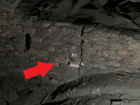</p>`		
					});
					
					sceneInside.annotations.add(aAbout2);
				}
				
				{
					let aAbout2 = new Potree.Annotation({
						position: [93.227, 57.474, -1.200],
						title: 'Punkt 10',
						cameraPosition: [96.416, 57.913, -2.408],
						cameraTarget: [93.974, 57.889, -2.389],
						description: 
						`10. Czujnik zarysowania + czujnik temperatury i wilgotności wewnętrznej
						<ul class="columns">
						<li><a href="https://www.mapa.network/goto/2YRNKz_Vz?orgId=11" target="_blank">Czujnik zarysowania</a></li></p>
						<li><a href="https://www.mapa.network/goto/iApNFz_Vk?orgId=11" target="_blank">Czujnik temperatury i wilgotności</a></li>
						</ul>
						<p style="text-align:center">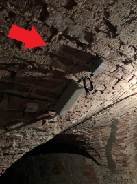</p>`		
					});
					
					sceneInside.annotations.add(aAbout2);
				}
					
			}
			

		});
		

		
					
	</script>
		
	
	
  </body>
</html>
